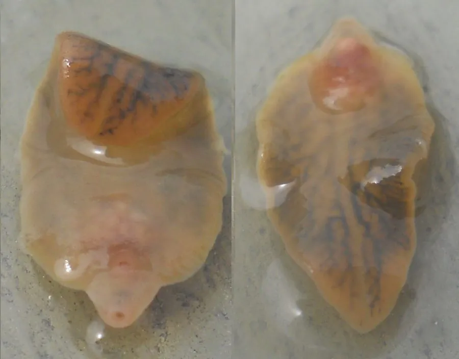

其他无脊椎动物 · 动物界
肝片形吸虫 Fasciola hepatica

寄生在牛羊和人肝胆管里的大型吸虫，形似柳叶，幼虫先侵入螺类再附着到水生植物上，生吃水芹等水生菜可能被感染。
- 分类
- 门扁形动物门纲吸虫纲目复殖目科片形科属片形属
- 栖息环境
- 牛、羊等草食兽和人的胆管，幼虫阶段寄生于椎实螺体内
- 地理分布
- 全球潮湿牧区，中国南方水网地带与牧区较多见
- 保护级别
- 暂无评估
物种志
肝片形吸虫成虫体长2–3厘米，宽约1厘米，身体扁平呈柳叶状，前端有一个锥状突起，被称为头锥。体表布满细小的棘，肠管向两侧分支，内部器官高度分支，肉眼看上去像一片带纹路的叶子。
它的生活史颇为曲折：虫卵随粪便排出，在水中孵出毛蚴，毛蚴钻入椎实螺等淡水螺，经过胞蚴、雷蚴阶段产生尾蚴；尾蚴离开螺体，附着在水芹、茼蒿等水生植物上结囊，形成囊蚴。牛、羊或人吞食囊蚴后，童虫穿过肠壁进入腹腔，再钻入肝脏，最终在胆管内发育为成虫。人感染多因生食水芹、凉拌水生蔬菜或饮用含囊蚴的生水，表现为发热、腹痛、肝区疼痛、嗜酸性粒细胞升高和贫血。预防的关键是把水生蔬菜彻底煮熟、不喝生水，并对牧区的牛羊定期驱虫。
形态与习性
- 体长2–3厘米，宽约1厘米，身体呈柳叶状
- 形态前端有锥状突起，体表布满细小棘刺
- 终宿主牛、羊、猪和人，成虫寄居胆管
- 中间宿主椎实螺等淡水螺
- 感染途径生食水芹等水生植物，或饮用含囊蚴的生水
- 防护水生蔬菜煮熟、不喝生水、牧区定期驱虫
趣味知识
- 肝片形吸虫的身体扁平，形状像一片柳叶。
- 它的幼虫要先住进淡水螺，再爬到水草上结囊。
- 生吃水芹或凉拌水生蔬菜，可能把囊蚴一起吃进肚子。